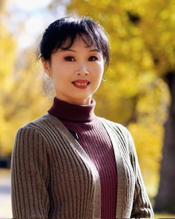
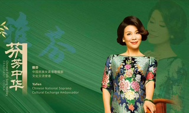
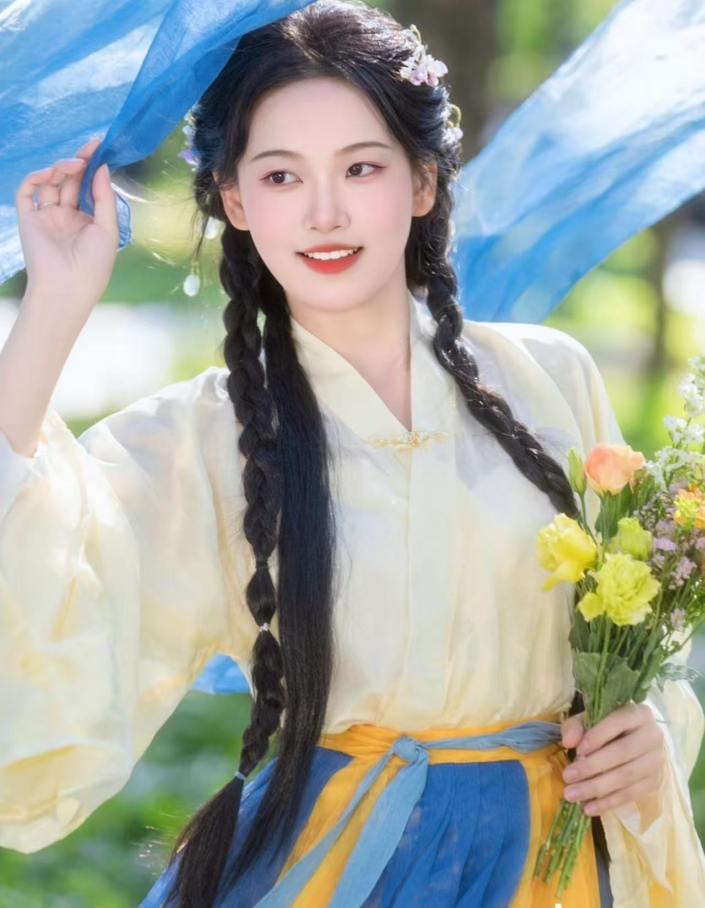

Our Story
舞团始创于2016年。十余载风雨兼程，舞团始终活跃在堪培拉及周边各类活动舞台上，积极服务社区、回馈社会，是当地广受喜爱与认可的中国舞表演团体。 2024年正式完成注册，迈入规范化发展的新阶段。
br>舞团主要由来自高校与职场的年轻人组成，成员大多具备扎实的中国舞功底和表演经历。在展现青春活力与多元风采的同时，致力于搭建东西方文化交流的桥梁， 促进不同文化的理解与融合，是一支兼具活力与专业、 富有责任感与社会情怀的优秀文艺团体。
舞团为了进一步提高舞蹈质量和排练效率, 自建了温馨而专业的家庭舞房作为主要排练场地，每周定期活动3-4小时。从热身、基本功训练，到身韵练习、 小舞段组合、大型群舞编排... 训练内容兼顾技术提升与舞台呈现，充实且高效。
The Red Cedar Dance Group was founded in 2016 by a group of passionate young women who love dance. Since then, we have actively participated in community and cultural events across Canberra, using dance as a universal language to promote multiculturalism, foster understanding, and enrich community life through high-quality performances.


盛晨 (Cindy) · 舞蹈团团长
红杉树青年舞团创始人, 悉尼大学商学硕士。自幼学习中国民族民间舞，拥有十余年澳洲本地舞蹈编排、舞台表演及舞团统筹管理经验。热心公益, 致力于以舞蹈为载体传播中华优秀传统文化，助力中澳文化艺术交流。。
Chen Sheng · (Cindy)Troupe Director
Founder of Red Cedar Dance Group, Master of Commerce from the University of Sydney. Trained in Chinese folk dances from young, with over a decade of local Australian experience in choreography, stage performance and troupe administration. Passionate about public welfare, she devotes herself to promoting traditional Chinese culture through dance and facilitating cultural exchanges between China and Australia.
Committee Members 委员会成员

盛晨(Cindy) · 舞蹈团团长
红杉树青年舞团创始人
Chen Sheng (Cindy) · Director
Founder & Leader of Red Cedar Dance Group

雅芬 · 艺术顾问
中国民族女高音歌唱家,国家一级演员, 中外文化交流使者
Yafen · Artistic Advisor
Chinese National Soprano, Cultural Exchange Ambassador
Artistic Advisor of Red Cedar Dance Group

殷若茗 · 执委
舞蹈团执行委员会成员
Victoria Yin · Executive Committee Member
Executive Committee Member
朱泓玉 · 财务总监
舞蹈团财务总监
Chelsey Zhu · Financial Officerr
Financial Officer, Red Cedar Dance Group